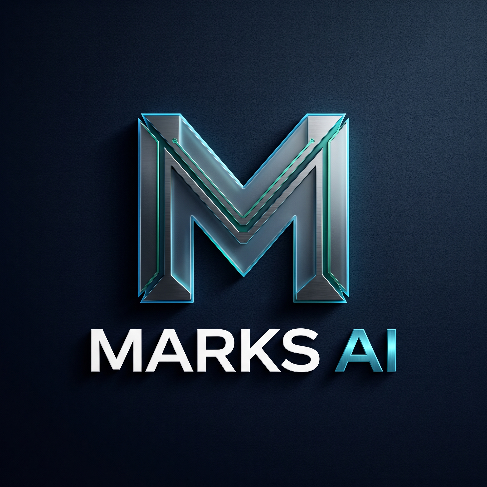

Engenharia de Software de Verdade
Desenvolvimento full-stack com arquitetura escalável (Next.js, React, TypeScript, PostgreSQL/Supabase com Row Level Security), garantindo segurança de dados, controle de acesso por perfil e alta disponibilidade.
Unimos engenharia de software de alta disponibilidade (arquitetura multi-tenant, bancos relacionais seguros e APIs) com inteligência artificial aplicada a processos de negócio reais.

Criamos soluções de tecnologia corporativa aliando rigor arquitetural à vanguarda da inteligência artificial generativa.
Desenvolvimento full-stack com arquitetura escalável (Next.js, React, TypeScript, PostgreSQL/Supabase com Row Level Security), garantindo segurança de dados, controle de acesso por perfil e alta disponibilidade.
Agentes conversacionais integrados ao WhatsApp, processamento de linguagem natural, leitura automatizada de comprovantes e documentos, e assistentes operacionais treinados para regras específicas de cada negócio.
Experiência prática de mais de uma década em operações reguladas e atendimento ao público (CRVA), traduzida em interfaces intuitivas, auditáveis e livres de gargalos operacionais.
Sistemas e micro-SaaS projetados e desenvolvidos pela Marks AI para resolver gargalos reais de gestão e atendimento.
PDV, CRM & Gestão de Pátio
Plataforma completa para Centros de Registro de Veículos Automotores. Frente de caixa, conta-corrente de despachantes, recibos com validação criptográfica SHA-256, app mobile para pátio de vistoria e atendimento automatizado via WhatsApp (assistente virtual Antonella).
Gestor Financeiro Pessoal Inteligente
Gestor financeiro pessoal inteligente integrado ao WhatsApp. Registra receitas e despesas por texto, áudio ou foto de comprovante, importa extratos em PDF, conta com o "Modo Anti-Ilusão" para proteção de saldo e gera diagnósticos financeiros via IA.
Gestão Corporativa de Ordens de Serviço
Sistema corporativo para gestão de ordens de serviço, controle de estoque técnico, histórico de clientes e acompanhamento de status em tempo real para assistências e prestadores de serviço.
Agendamento & Retenção com Agente de IA
Plataforma de agendamento inteligente para barbearias e estética masculina com triagem, confirmação e lembretes automatizados via inteligência artificial no WhatsApp.
CRM Inteligente & Desenvolvimento Exclusivo
CRM comercial com IA para concessionárias e lojas de veículos, além de desenvolvimento sob demanda de sistemas web, plataformas de afiliados e automações corporativas integradas.
Sincronização em tempo real via API pública do GitHub, refletindo nossos repositórios, bibliotecas e protótipos de engenharia.

Fundador & Arquiteto de Software • Passo Fundo, RS
Com mais de uma década de vivência prática em operações críticas, rotinas regulatórias e atendimento ao público credenciado pelo DETRAN-RS/CRVA, Antônio uniu rigor procedimental à engenharia de software full-stack e arquitetura de dados relacional.
Graduando em Análise e Desenvolvimento de Sistemas pelo Senac RS, liderou a concepção de sistemas transacionais e a fundação da Marks AI, arquitetando ecossistemas multi-tenant com segurança a nível de linha (PostgreSQL/Supabase RLS), integrações de pagamento criptografadas e inteligência artificial operacional integrada ao WhatsApp.
Conte-nos sobre os desafios do seu negócio ou a oportunidade de produto que deseja acelerar.
Atendimento direto com a diretoria técnica e comercial para estruturação de projetos, parcerias e implantação dos nossos SaaS.